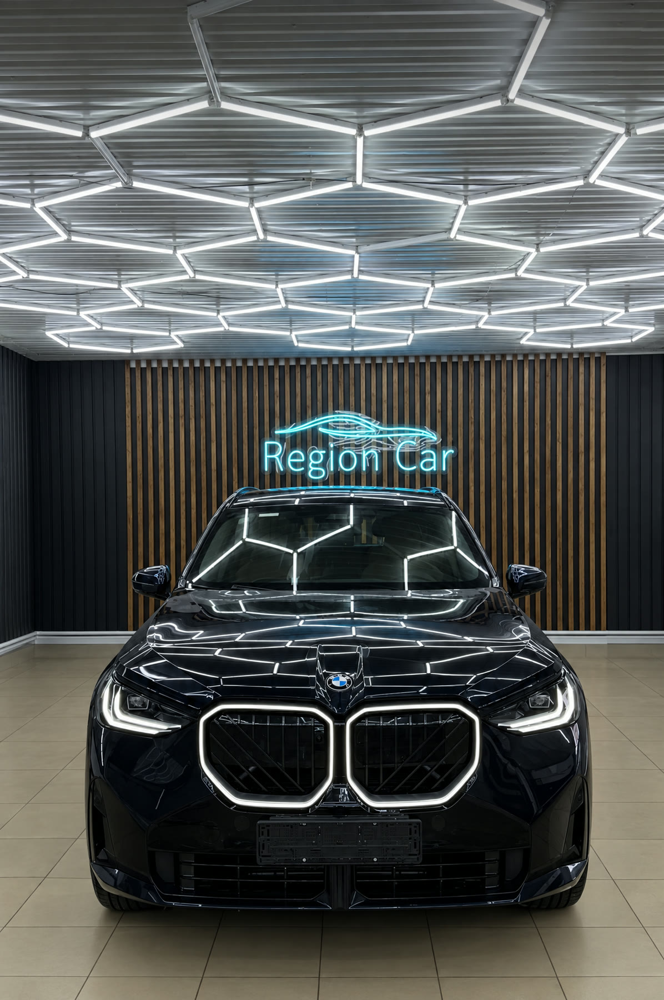
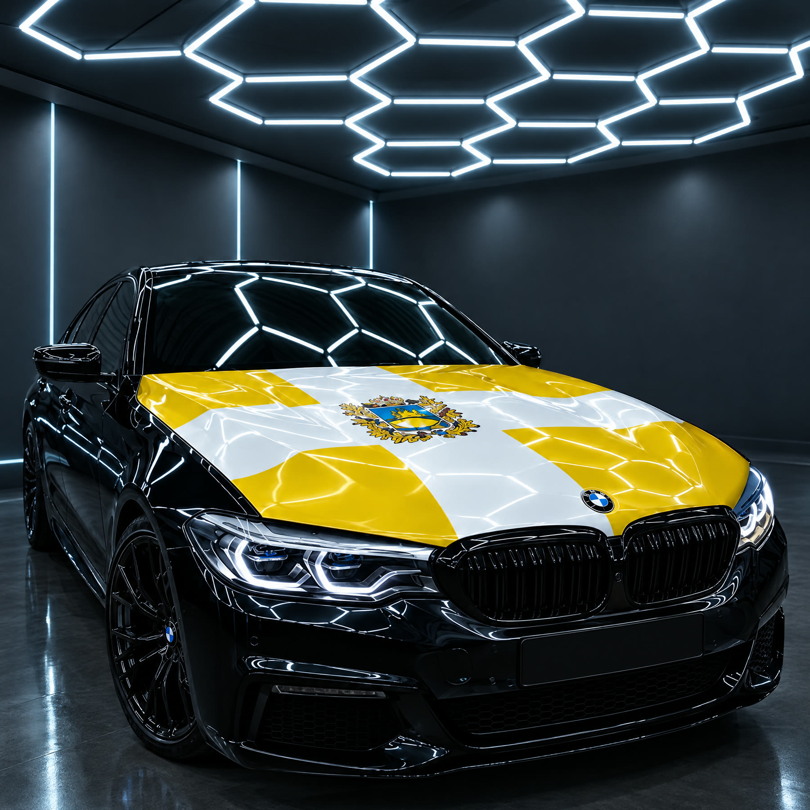
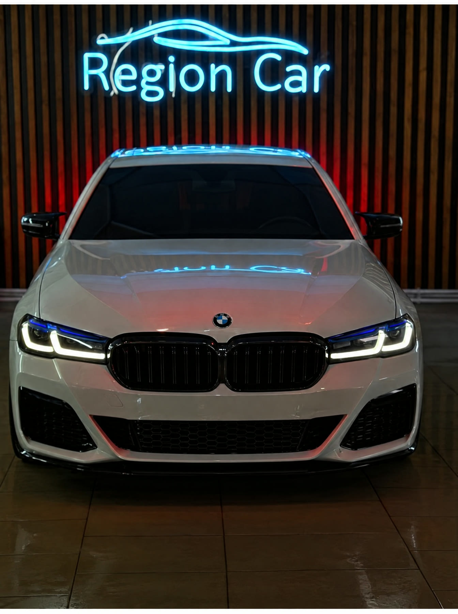
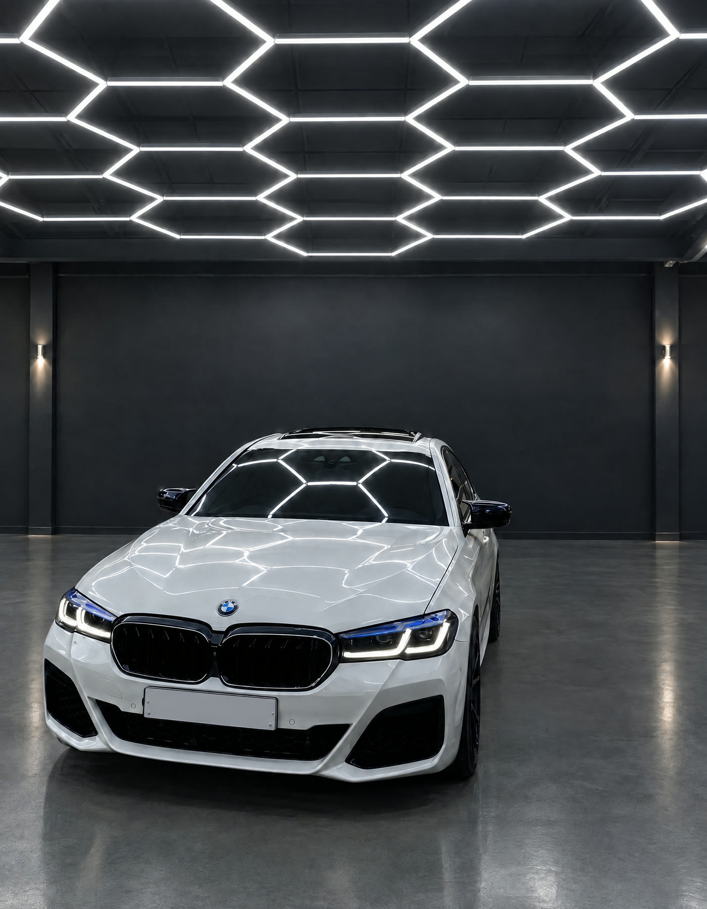
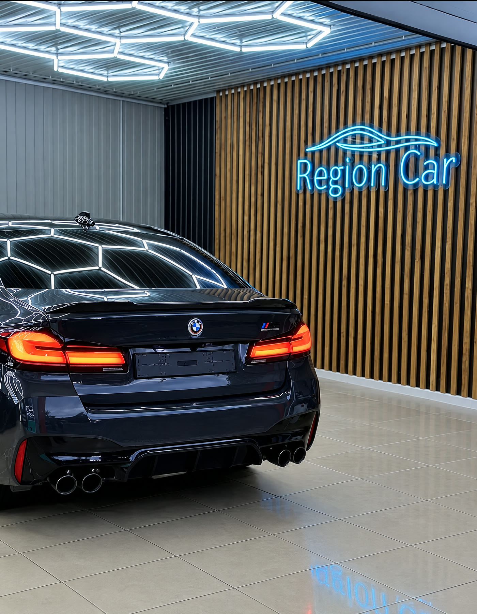

Детейлинг-студия · 26 регион
Плёнка без пузырей. Кромка без подрезов.
Тонирование, бронирование полиуретаном и детейлинг. Лекала режем на плоттере под вашу модель, клеим в закрытом боксе — ножом по стеклу и кузову не работаем.
Запись на ближайшие дни открыта
200 мкм
Толщина полиуретана
1 день
Срок тонирования
5 лет
Гарантия на плёнку
Услуги
Три вещи, которые мы делаем хорошо
Не берём всё подряд. Тонирование, полиуретан и подготовка кузова под них — это один технологический процесс, и он у нас отлажен.
Тонирование
Атермальная и съёмная. Передние стёкла — по ГОСТу, светопропускание меряем прибором при вас. Задняя полусфера — на выбор по проценту.
Бронирование
Полиуретан на зоны риска или кузов целиком. Края заворачиваем под кромку панели — стыка на торце не видно. Держит скол от щебня на трассе.
Детейлинг
Полировка, химчистка салона, керамика. Перед плёнкой кузов полируем всегда: полиуретан прозрачный, и любая риска под ним останется навсегда.
Процесс · 06 шагов
Как мы тонируем
Прокрутите — увидите, что происходит со стеклом на каждом шаге.
Процесс · 06 шагов
Как мы бронируем
Полиуретан ложится по зонам. Прокрутите — увидите порядок.
Работы
Из бокса
Снято у нас, без постановки. Кадры обработаны: убраны люди и лишнее, машина осталась как есть.




Запись
Напишите в Telegram — ответим и назовём срок
Скажите модель и что нужно: тонировка, броня или подготовка под них. Назовём цену и свободное окно. Если удобнее голосом — звоните.
Замер светопропускания — при вас, до начала работы.